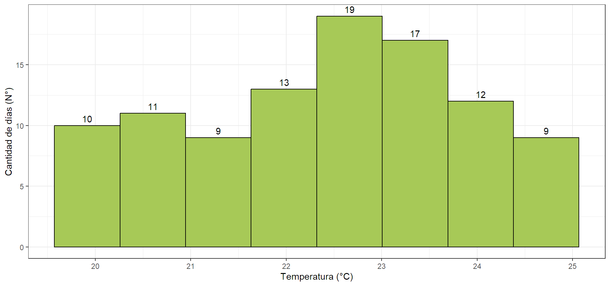
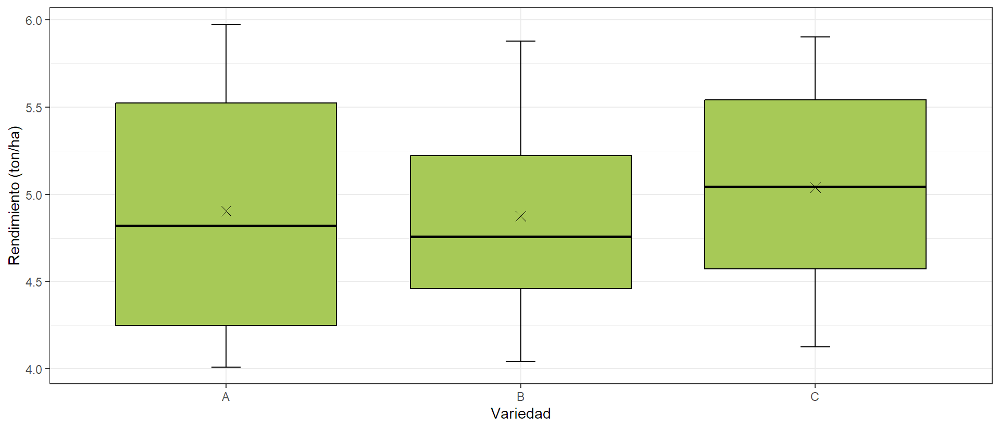
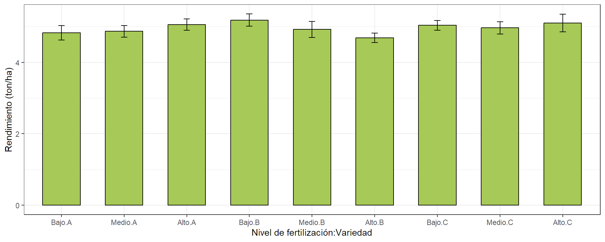
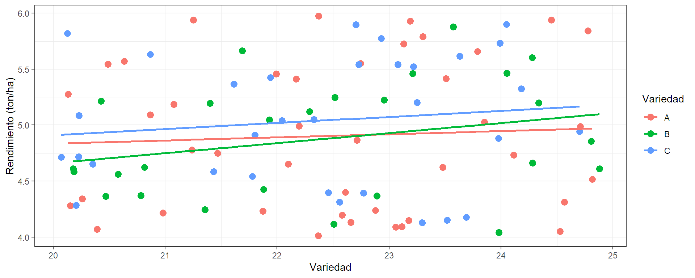

Manejo Básico de R
Aplicación en el Contexto Agronómico
Introducción.
¿Qué es R?
R es un lenguaje de programación y un entorno de software para el análisis estadístico y la visualización de datos. Es ampliamente utilizado en la investigación y en la industria.

¿Partes de la Interfaz de RStudio?
RStudio es un entorno de desarrollo integrado (IDE) para R. Su interfaz se divide en varias partes principales:

Interfaz de RStudio tomada de (Capítulo 1 R Básico, n.d.)
Crear documentos en R tipo.qmd
Abrir RStudio
Ir a “File” > “New File” > “Quarto Document”.
Identificar el documento.
Elegir el tipo de documento y dar clic en “Create”.
Construye el documento.
Guardar y renderizar.
Información adicional
Ir a: Tutorial: Hello, Quarto
Actividad práctica.
Contexto de los datos
Este conjunto de datos corresponde a la simulación de la información recolectada diariamente a lo largo de 100 días en una serie de parcelas agronómicas. Los datos incluyen variables clave para el análisis de rendimiento y condiciones ambientales en un contexto agrícola.
Variables
- Fecha: Fechas de registro.
- Rendimiento: Rendimiento (ton/ha)
- Fertilización: Nivel de fertilización utilizado, categorizado como Bajo, Medio o Alto.
- Precipitacion: Precipitación (mm)
- Temperatura: Temperatura promedio (°C)
- Variedad: Variedad de cultivo utilizada, con opciones A, B y C.
- Insecticida: Indicador de si se utilizó insecticida o no.
Objetivos de la presentación
- Instalar y cargar librerías.
- Importar datos desde Excel.
- Revisar la estructura de los datos.
- Ajustar la naturaleza de las variables.
- Generar resúmenes numéricos con el paquete
descriptr. - Crear tablas con el paquete
descriptr. - Realizar gráficos con el paquete
ggplot2.
Instalación de librerías.
Cargar librerías.
Importar datos desde Excel
# A tibble: 6 × 7
Fecha Rendimiento Fertilización Precipitacion Temperatura
<dttm> <dbl> <chr> <dbl> <dbl>
1 2020-01-01 00:00:00 4.75 Alto 121. 21.5
2 2020-01-02 00:00:00 5.90 Alto 127. 24.0
3 2020-01-03 00:00:00 5.46 Bajo 81.2 24.1
4 2020-01-04 00:00:00 5.20 Bajo 116. 24.3
5 2020-01-05 00:00:00 4.31 Medio 95.9 24.6
6 2020-01-06 00:00:00 4.31 Bajo 125. 22.6
# ℹ 2 more variables: Variedad <chr>, Insecticida <chr>Revisar la estructura de los datos.
tibble [100 × 7] (S3: tbl_df/tbl/data.frame)
$ Fecha : POSIXct[1:100], format: "2020-01-01" "2020-01-02" ...
$ Rendimiento : num [1:100] 4.75 5.9 5.46 5.2 4.31 ...
$ Fertilización: chr [1:100] "Alto" "Alto" "Bajo" "Bajo" ...
$ Precipitacion: num [1:100] 121.4 127.4 81.2 115.8 95.9 ...
$ Temperatura : num [1:100] 21.5 24 24.1 24.3 24.6 ...
$ Variedad : chr [1:100] "A" "C" "B" "B" ...
$ Insecticida : chr [1:100] "No" "Sí" "No" "Sí" ...Ajustar la naturaleza de las variables.
tibble [100 × 7] (S3: tbl_df/tbl/data.frame)
$ Fecha : POSIXct[1:100], format: "2020-01-01" "2020-01-02" ...
$ Rendimiento : num [1:100] 4.75 5.9 5.46 5.2 4.31 ...
$ Fertilización: Factor w/ 3 levels "Alto","Bajo",..: 1 1 2 2 3 2 1 1 2 1 ...
$ Precipitacion: num [1:100] 121.4 127.4 81.2 115.8 95.9 ...
$ Temperatura : num [1:100] 21.5 24 24.1 24.3 24.6 ...
$ Variedad : Factor w/ 3 levels "A","B","C": 1 3 2 2 1 3 2 3 3 1 ...
$ Insecticida : Factor w/ 2 levels "No","Sí": 1 2 1 2 1 1 2 1 2 1 ...Cambiar el orden de las categorías de una variable factor.
Generar resúmenes numéricos con el paquete descriptr.
Para las variables numéricas.
| vars | min | max | mean | t_mean | median | mode | range | variance | stdev | skew | kurtosis | coeff_var | q1 | q3 | iqrange |
|---|---|---|---|---|---|---|---|---|---|---|---|---|---|---|---|
| Precipitacion | 80.35 | 149.30 | 117.19 | 117.50 | 120.14 | 80.35 | 68.95 | 425.07 | 20.62 | -0.17 | -1.21 | 17.59 | 98.44 | 132.84 | 34.40 |
| Rendimiento | 4.01 | 5.97 | 4.94 | 4.93 | 4.93 | 4.01 | 1.96 | 0.35 | 0.59 | 0.11 | -1.28 | 12.04 | 4.39 | 5.46 | 1.07 |
| Temperatura | 20.07 | 24.88 | 22.44 | 22.43 | 22.57 | 20.07 | 4.81 | 1.99 | 1.41 | -0.10 | -1.05 | 6.29 | 21.33 | 23.51 | 2.18 |
Para una variable numérica por una variable factor.
# A tibble: 3 × 16
Variedad min max mean t_mean median mode range variance stdev skew
<chr> <dbl> <dbl> <dbl> <dbl> <dbl> <dbl> <dbl> <dbl> <dbl> <dbl>
1 A 4.01 5.97 4.91 4.90 4.82 4.01 1.96 0.437 0.661 0.202
2 B 4.04 5.88 4.87 4.87 4.76 4.04 1.84 0.264 0.514 0.206
3 C 4.13 5.90 5.04 5.04 5.04 4.13 1.77 0.325 0.570 -0.0827
# ℹ 5 more variables: kurtosis <dbl>, coeff_var <dbl>, q1 <dbl>, q3 <dbl>,
# iqrange <dbl>Para una variable numérica por varias variables factor.
# A tibble: 9 × 17
Variedad Fertilización min max mean t_mean median mode range variance
<chr> <chr> <dbl> <dbl> <dbl> <dbl> <dbl> <dbl> <dbl> <dbl>
1 A Bajo 4.01 5.94 4.83 4.83 4.57 4.01 1.93 0.583
2 B Bajo 4.56 5.66 5.18 5.18 5.20 4.56 1.10 0.206
3 C Bajo 4.18 5.90 5.04 5.04 5.04 4.18 1.72 0.277
4 A Medio 4.07 5.97 4.87 4.87 4.78 4.07 1.90 0.452
5 B Medio 4.37 5.88 4.92 4.92 4.73 4.37 1.51 0.302
6 C Medio 4.15 5.54 4.97 4.97 5.00 4.15 1.39 0.240
7 A Alto 4.22 5.94 5.06 5.06 5.09 4.22 1.72 0.273
8 B Alto 4.04 5.46 4.69 4.69 4.62 4.04 1.42 0.227
9 C Alto 4.13 5.90 5.10 5.10 5.52 4.13 1.77 0.553
# ℹ 7 more variables: stdev <dbl>, skew <dbl>, kurtosis <dbl>, coeff_var <dbl>,
# q1 <dbl>, q3 <dbl>, iqrange <dbl>Crear tablas con el paquete descriptr.
Tablas para variables cuantitativas continuas.
Recuerde.
- La variables cuantitativas continuas se organizan en tablas agrupadas por intervalos.
- Para calcular el numéro de intervalos se utiliza la regla de sturges, \(k=1+3.322*log10(n)\) redondeado al entero más cercano.
[1] 7.644Tablas para variables cuantitativas continuas.
| lower | upper | frequency | cumulative | freq_percent | cum_percent |
|---|---|---|---|---|---|
| 4.01 | 4.26 | 17 | 17 | 17 | 17 |
| 4.26 | 4.50 | 12 | 29 | 12 | 29 |
| 4.50 | 4.75 | 15 | 44 | 15 | 44 |
| 4.75 | 4.99 | 9 | 53 | 9 | 53 |
| 4.99 | 5.24 | 13 | 66 | 13 | 66 |
| 5.24 | 5.48 | 10 | 76 | 10 | 76 |
| 5.48 | 5.73 | 12 | 88 | 12 | 88 |
| 5.73 | 5.97 | 12 | 100 | 12 | 100 |
Para variables factor ó cualitativas.
Variable: Variedad
-----------------------------------------------------------------------
Levels Frequency Cum Frequency Percent Cum Percent
-----------------------------------------------------------------------
A 42 42 42 42
-----------------------------------------------------------------------
B 26 68 26 68
-----------------------------------------------------------------------
C 32 100 32 100
-----------------------------------------------------------------------
Total 100 - 100.00 -
-----------------------------------------------------------------------Para dos variables factor ó cualitativas.
Cell Contents
|---------------|
| Frequency |
| Percent |
| Row Pct |
| Col Pct |
|---------------|
Total Observations: 100
-------------------------------------------------------------
| | Insecticida |
-------------------------------------------------------------
| Variedad | No | Sí | Row Total |
-------------------------------------------------------------
| A | 19 | 23 | 42 |
| | 0.19 | 0.23 | |
| | 0.45 | 0.55 | 0.42 |
| | 0.43 | 0.41 | |
-------------------------------------------------------------
| B | 13 | 13 | 26 |
| | 0.13 | 0.13 | |
| | 0.5 | 0.5 | 0.26 |
| | 0.3 | 0.23 | |
-------------------------------------------------------------
| C | 12 | 20 | 32 |
| | 0.12 | 0.2 | |
| | 0.38 | 0.62 | 0.32 |
| | 0.27 | 0.36 | |
-------------------------------------------------------------
| Column Total | 44 | 56 | 100 |
| | 0.44 | 0.56 | |
-------------------------------------------------------------Realizar gráficos con el paquete ggplot2.
Histogramas.

Cajas y bigotes o boxplots.

De promedios con barras de error.
ggplot(data = datos,aes(x = interaction(Fertilización, Variedad),y = Rendimiento))+
geom_bar(fun=mean, stat = "summary", fill="#a7c957", color="black",width=0.6)+
stat_summary(fun = mean, width=0.1,geom = "errorbar",
fun.max = function(x) mean(x) + sd(x)/sqrt(length(x)), fun.min = function(x) mean(x) - sd(x)/sqrt(length(x)))+
theme_bw()+ labs(y="Rendimiento (ton/ha)",x="Nivel de fertilización:Variedad")
Dispersión
